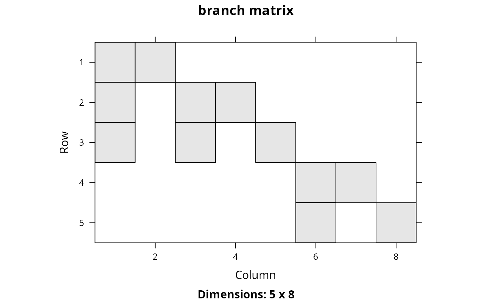

Phylogenetic trees depict the evolutionary relationships between different species. Each branch in a phylogenetic tree represents a period of evolutionary history. Species that are connected to the same branch both share that same period of evolutionary history. This function creates a matrix that shows which species are connected with branch. In other words, it creates a matrix that shows which periods of evolutionary history each species experienced.
branch_matrix(x) # S3 method for default branch_matrix(x) # S3 method for phylo branch_matrix(x)
| x |
|
|---|
dgCMatrix-class sparse matrix object. Each row
corresponds to a different species. Each column corresponds to a different
branch. Species that inherit from a given branch are denoted with a one.
# load data data(sim_phylogeny) # generate species by branch matrix m <- branch_matrix(sim_phylogeny) # plot data if (requireNamespace("ape", quietly = TRUE)) { par(mfrow = c(1,2)) plot(sim_phylogeny, main = "phylogeny") plot(raster(as.matrix(m)), main = "branch matrix") } else { message("the \"ape\" package needs to be installed to plot phylogenies") }